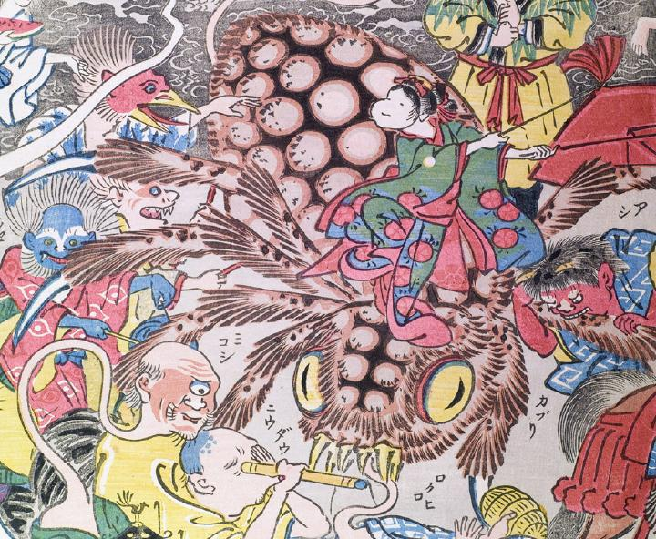

大蜘蛛の上にお多福の面を付けた人物が乗っている。大蜘蛛は毛に覆われ足先には鋭い爪がある。蜘蛛に乗る人物は女のようであり、華やかな着物をまとっている。両手にハタキのような道具を持って踊っている。
著作者：玉園／出典：親書誌：U426_nichibunken_0145：画本西遊記百鬼夜行ノ圖；エホンサイユウキヒャッキヤギョウノズ／日付：2009／資源識別子：U426_nichibunken_0145_0010_0000
Copyright (c)2010- International Research Center for Japanese Studies, Kyoto, Japan. All rights reserved.